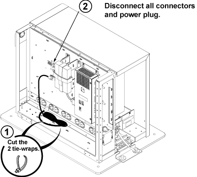
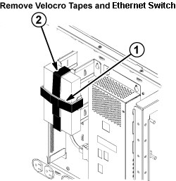

Operating Documentation
Direction 5500113, Rev# 3
Discovery MR450 1.5T Service Methods
Module Version 3.0, Version Date 5/6/10
Operating Documentation |
| Required Persons | Preliminary Reqs | Procedure | Finalization |
|---|---|---|---|
| 1 | Not Applicable | 15 mins | 5 mins |
| Item | Qty | Effectivity | Part# | Manufacturer | |
|---|---|---|---|---|---|
| Standard Screwdriver | 1 | - | - | - | |
| ||||
| FATAL ELECTRIC SHOCK HAZARD! | ||||
| TO PREVENT POSSIBLE FATAL ELECTRIC SHOCK, Shut down the Host computer and perform LOckout/TagOut (LOTO) BEFORE beginning THIS PROCEDURE. |
Close the application software on the Host Computer. Refer to Lockout/Tagout of GOC to LOTO power sources.
Remove the right cover of the GOC, and disconnect the ground lead that connects the cover to the main chassis.
| NOTE: | Avoid straining the short ground lead. |
Illustration 1: Removing Right Cover

Cut the two tie-wraps securing the power cable.
Disconnect the power cable from the Ethernet Switch.
Remove all cables connected to the Ethernet Switch, and make a note of labeling for reconnection.
Illustration 2: Cable Removal from Ethernet Switch

Remove the Velcro® tapes from the Ethernet Switch.
Remove the Ethernet Switch from the Ethernet Switch Support Bracket on the GOC.
Illustration 3: Ethernet Switch Removal

Install the replacement Ethernet Switch by reversing the above steps.
Restore power to the GOC and reboot the computer.
Perform a test scan to ensure proper operation.